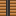

The star in a box, finally. A Tokamak burns Deuterium and Helium-3 for more power than a field of fission cubes, makes no waste, and fails safe: when anything goes wrong it quenches, goes quiet and waits for you. Magnetic Confinement in the R&D tab unlocks it. Deuterium comes from an Isotope Separator on Earth; Helium-3 comes from the Moon.
Tokamak Control
rackcraft:tokamak_control
The desk you run a Tokamak from. Place it first, facing you, where the outside of the ring will be: while you hold any ring part nearby, it draws the ring it wants behind it (set the radius on its screen, 6 to 24), outlining every block still missing in its part's colour and anything in the way in red. Its screen says whether the ring is formed and, if not, what's wrong and where. Load a Deuterium and a Helium-3 Canister and press Ignite: it draws a fifth of the ring's output from the grid for 30 seconds, then the ring runs itself, 10 MW for every block of plasma channel (less a tenth for its own coils): 640 MW for a radius-8 ring, 1.92 GW for radius 24. It burns a pair of canisters every 10 minutes for each 100 MW it delivers. Its screen also shows the ring's heat and how much of it the Divertors take. It quenches (and the Ops Terminal says why) if the ring breaks, the fuel runs out or the Divertors can't take the heat; Shut down puts it out quietly. One Control runs one ring. Built on the Assembly Line from a Modular Reactor (16 Superconducting Wire, 8 Titanium Ingots, 4 Cryo Coils, 4 Circuit Boards, weld, rivet) once Magnetic Confinement is researched.
The wall of a Tokamak's ring: thick titanium-lined steel that keeps the vacuum in and the plasma off everything else. Build a 3x3 tube of it round a one-block channel of air that runs in a closed circle (radius 6 to 24), and every block that touches the channel, corners too, has to be Vacuum Vessel, a Field Coil, a Divertor or Pressure Glass. Airtight. Craft eight from four Steel Ingots, four Titanium Ingots and a Steel Block.
Crafting
makes 8
Field Coil
rackcraft:field_coil
A superconducting magnet in a slice of the ring's shell. A channel block is a coil turn when the blocks above, below and either side of it are all Field Coils, and a Tokamak needs a turn at least every 4 blocks round its ring, or the plasma wanders off and touches the wall (which is what quenches look like). Airtight. Craft four from four Superconducting Wire, two Titanium Ingots, two Cryo Coils and a Steel Block.
Crafting
makes 4
Divertor
rackcraft:divertor
The ash tray of a fusion reactor: a block of the ring's shell that takes the heat the plasma throws at the wall. 2% of what a Tokamak gives the grid arrives here as heat (11.5 MW for a radius-8 ring at full output, about fifty Chillers' worth), split over the Divertors on a coolant loop with sinks; nothing else can take it. If the loops can't keep up for 5 seconds, the ring quenches: a bang, sparks, nothing harmed, and it must be ignited again. A ring needs at least one. Airtight. Craft from Graphene Sheets, Titanium Ingots and Coolant Pipe.
Crafting

Central Solenoid
rackcraft:central_solenoid
The column through the hole in the middle of a Tokamak: five of them stacked, centred on the plasma channel's height and within a block of the ring's centre. It drives the current that heats the plasma at ignition. Built on the Assembly Line from a Steel Block (32 Superconducting Wire, 4 Titanium Ingots, weld) once Magnetic Confinement is researched.
A tall cold column that boils hydrogen off very slowly and keeps the heavy bit: one atom in every six and a half thousand is deuterium, and this machine is patient. Each core turns 8 Hydrogen Canisters into one Deuterium Canister every 2 minutes, drawing 500 kW. A multiblock processing cube, 2x2x2 or bigger, fed and emptied like the others, and locked until Magnetic Confinement is researched. It works anywhere: Earth, orbit or the Moon.
Crafting
Deuterium Canister
rackcraft:deuterium_canister
Heavy hydrogen, one neutron heavier and a great deal more expensive, from an Isotope Separator. Half of a Tokamak's fuel: it burns with Helium-3. Don't breathe it, not because it's dangerous, but because it took four minutes of a megawatt to make.